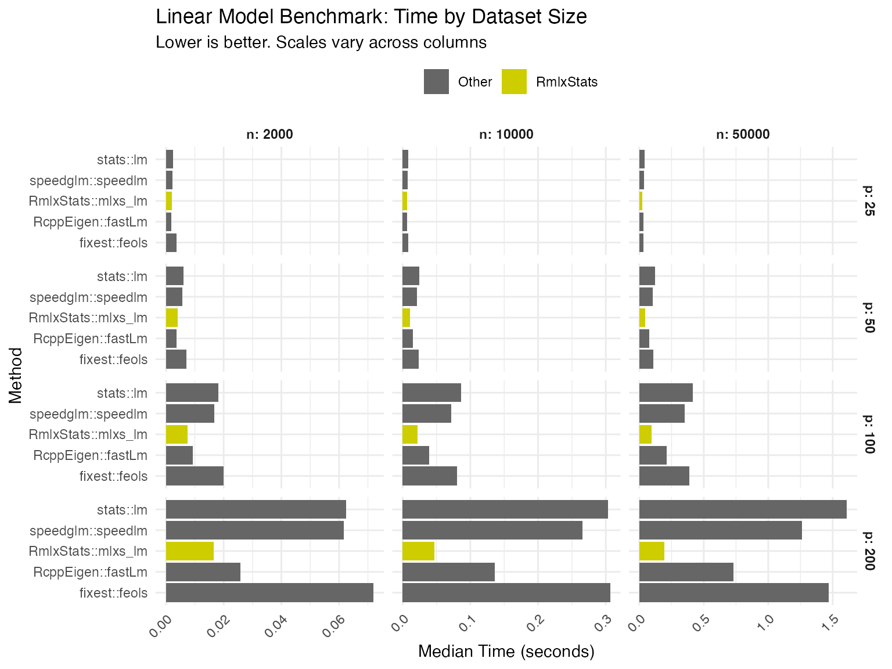
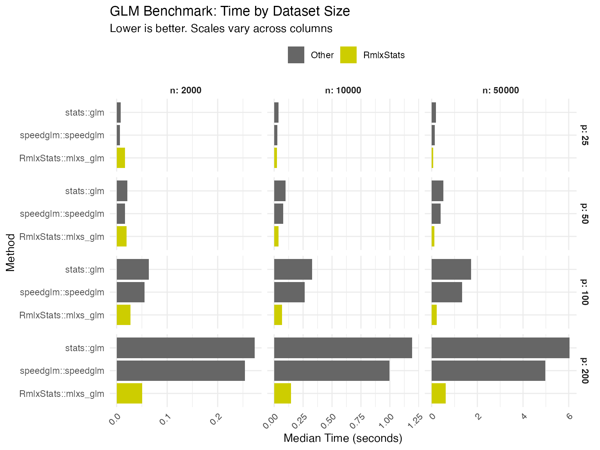
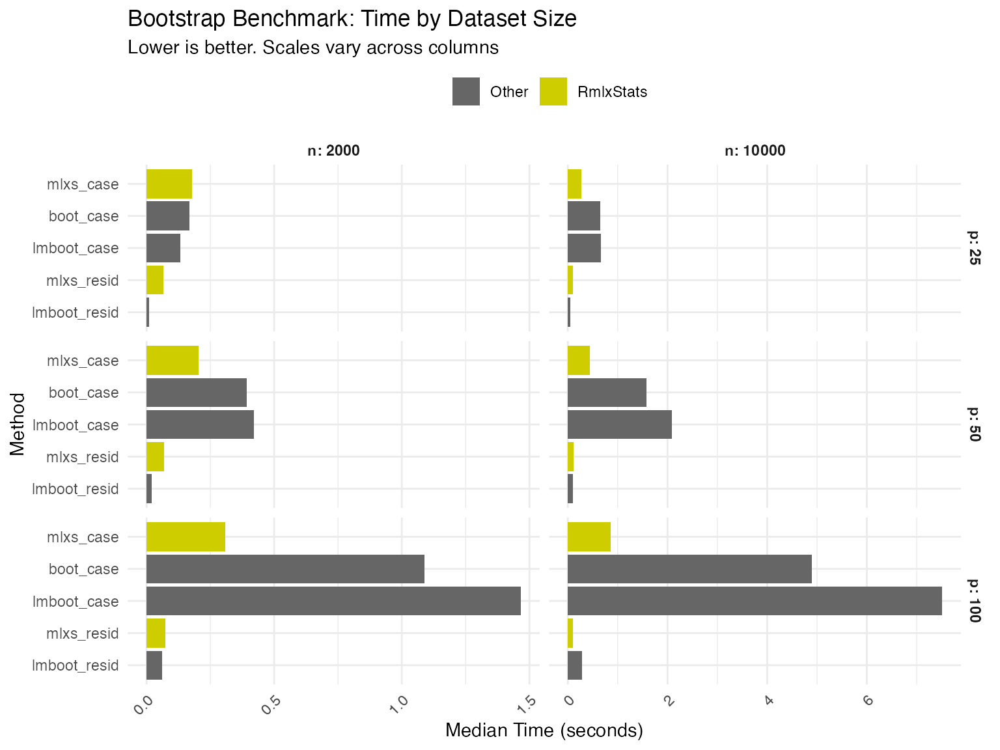

Benchmarks
benchmarks.RmdWe benchmark RmlxStats against base R and specialized fast fitting
packages, across varying numbers of cases (n) and
predictors (p).
Benchmarking was run on an M1 Macbook Air.
Data Generation
set.seed(20251111)
n_max <- 50000
p_max <- 200
X <- matrix(rnorm(n_max * p_max), nrow = n_max, ncol = p_max)
colnames(X) <- paste0("x", seq_len(p_max))
beta_true <- rnorm(p_max, mean = 0, sd = 0.5)
y_continuous <- drop(X %*% beta_true + rnorm(n_max, sd = 2))
linpred <- drop(X %*% beta_true) / 5
prob <- 1 / (1 + exp(-linpred))
y_binary <- rbinom(n_max, size = 1, prob = prob)
full_data <- data.frame(
y_cont = y_continuous,
y_bin = y_binary,
X
)
n_sizes <- c(2000, 10000, 50000)
p_sizes <- c(50, 100, 200)
bench_grid <- expand.grid(
n = n_sizes,
p = p_sizes,
stringsAsFactors = FALSE
)
bench_grid <- bench_grid[bench_grid$n > bench_grid$p, ]Linear Model Benchmarks
lm_results <- list()
for (i in seq_len(nrow(bench_grid))) {
n <- bench_grid$n[i]
p <- bench_grid$p[i]
subset_data <- full_data[1:n, c("y_cont", paste0("x", 1:p))]
formula_str <- paste("y_cont ~", paste(paste0("x", 1:p), collapse = " + "))
lm_formula <- as.formula(formula_str)
bm <- mark(
lm = lm(lm_formula, data = subset_data),
mlxs_lm = {
l <- mlxs_lm(lm_formula, data = subset_data)
Rmlx::mlx_eval(l$coefficients)
},
feols = feols(lm_formula, data = subset_data),
fastLm = RcppEigen::fastLm(lm_formula, data = subset_data),
speedlm = speedglm::speedlm(lm_formula, data = subset_data),
iterations = 3,
check = FALSE,
filter_gc = FALSE
)
bm$n <- n
bm$p <- p
bm$model_type <- "LM"
lm_results[[i]] <- bm
}
lm_df <- do.call(rbind, lm_results)GLM Benchmarks
glm_results <- list()
for (i in seq_len(nrow(bench_grid))) {
n <- bench_grid$n[i]
p <- bench_grid$p[i]
subset_data <- full_data[1:n, c("y_bin", paste0("x", 1:p))]
formula_str <- paste("y_bin ~", paste(paste0("x", 1:p), collapse = " + "))
glm_formula <- as.formula(formula_str)
bm <- mark(
glm = glm(glm_formula, family = binomial(),
data = subset_data,
control = list(maxit = 50)),
mlxs_glm = {
g <- mlxs_glm(glm_formula, family = mlxs_binomial(),
data = subset_data,
control = list(maxit = 50, epsilon = 1e-6))
Rmlx::mlx_eval(g$coefficients)
},
speedglm = speedglm::speedglm(glm_formula, family = binomial(),
data = subset_data),
iterations = 3,
check = FALSE,
filter_gc = FALSE
)
bm$n <- n
bm$p <- p
bm$model_type <- "GLM"
glm_results[[i]] <- bm
}
glm_df <- do.call(rbind, glm_results)Bootstrap Benchmarks
For bootstrap, we use smaller datasets and fewer bootstrap iterations due to computational cost.
boot_grid <- expand.grid(
n = c(2000, 10000),
p = c(50, 100),
stringsAsFactors = FALSE
)
boot_results <- list()
for (i in seq_len(nrow(boot_grid))) {
n <- boot_grid$n[i]
p <- boot_grid$p[i]
subset_data <- full_data[1:n, c("y_cont", paste0("x", 1:p))]
formula_str <- paste("y_cont ~", paste(paste0("x", 1:p), collapse = " + "))
boot_formula <- as.formula(formula_str)
fit_mlxs <- mlxs_lm(boot_formula, data = subset_data)
fit_base <- lm(boot_formula, data = subset_data)
# Bootstrap function for boot package
boot_stat <- function(dat, idx) {
coef(lm(boot_formula, data = dat[idx, , drop = FALSE]))
}
bm <- mark(
boot_case = boot::boot(subset_data, statistic = boot_stat,
R = 50L, parallel = "no"),
lmboot_case = lmboot::paired.boot(boot_formula, data = subset_data,
B = 50L),
lmboot_resid = lmboot::residual.boot(boot_formula, data = subset_data,
B = 50L),
mlxs_case = {
s <- summary(fit_mlxs, bootstrap = TRUE,
bootstrap_args = list(B = 50L, seed = 42,
bootstrap_type = "case",
progress = FALSE))
Rmlx::mlx_eval(s$std.err)
},
mlxs_resid = {
s <- summary(fit_mlxs, bootstrap = TRUE,
bootstrap_args = list(B = 50L, seed = 42,
bootstrap_type = "resid",
progress = FALSE))
Rmlx::mlx_eval(s$std.err)
},
iterations = 3,
check = FALSE,
filter_gc = FALSE,
memory = FALSE
)
bm$n <- n
bm$p <- p
bm$model_type <- "Bootstrap"
boot_results[[i]] <- bm
}
boot_df <- do.call(rbind, boot_results)Visualization
all_results <- rbind(lm_df, glm_df, boot_df)
all_results$method <- as.character(all_results$expression)
all_results$median_sec <- as.numeric(all_results$median, units = "s")
all_results$is_mlxs <- grepl("^mlxs", all_results$method)
# Summary statistics
all_results_clean <- all_results[!is.na(all_results$median_sec), ]
summary_results <- aggregate(
median_sec ~ model_type + n + p + method + is_mlxs,
data = all_results_clean,
FUN = median
)Summary Tables
We compare RmlxStats functions both against base R, and against the fastest alternative tested.
# Helper function to calculate speedup percentage
calc_speedup <- function(baseline, mlxs) {
((baseline - mlxs) / baseline) * 100
}
# Create comparison data frame
comparison_data <- data.frame(
model = character(),
n = numeric(),
p = numeric(),
mlxs_time = numeric(),
base_time = numeric(),
fastest_time = numeric(),
fastest_method = character(),
stringsAsFactors = FALSE
)
# Map methods to model types
lm_mlxs <- "mlxs_lm"
lm_base <- "lm"
glm_mlxs <- "mlxs_glm"
glm_base <- "glm"
boot_case_mlxs <- "mlxs_case"
boot_case_base <- "boot_case"
boot_resid_mlxs <- "mlxs_resid"
boot_resid_base <- "lmboot_resid"
# Process each model type
models <- list(
list(name = "lm", mlxs = lm_mlxs, base = lm_base, type = "LM"),
list(name = "glm", mlxs = glm_mlxs, base = glm_base, type = "GLM"),
list(name = "boot_case", mlxs = boot_case_mlxs, base = boot_case_base, type = "Bootstrap"),
list(name = "boot_resid", mlxs = boot_resid_mlxs, base = boot_resid_base, type = "Bootstrap")
)
for (model_info in models) {
model_data <- subset(summary_results, model_type == model_info$type)
if (model_info$type == "Bootstrap") {
pattern <- if(model_info$name == "boot_case") "case" else "resid"
model_data <- subset(model_data, grepl(pattern, method))
}
# Get unique n/p combinations
configs <- unique(model_data[, c("n", "p")])
for (i in seq_len(nrow(configs))) {
n_val <- configs$n[i]
p_val <- configs$p[i]
config_data <- subset(model_data, n == n_val & p == p_val)
mlxs_time <- config_data$median_sec[config_data$method == model_info$mlxs]
base_time <- config_data$median_sec[config_data$method == model_info$base]
if (length(mlxs_time) > 0 && length(base_time) > 0) {
# Find fastest non-mlxs method
non_mlxs <- subset(config_data, !is_mlxs)
if (nrow(non_mlxs) > 0) {
fastest_idx <- which.min(non_mlxs$median_sec)
fastest_time <- non_mlxs$median_sec[fastest_idx]
fastest_method <- non_mlxs$method[fastest_idx]
} else {
fastest_time <- base_time
fastest_method <- model_info$base
}
comparison_data <- rbind(comparison_data, data.frame(
model = model_info$name,
n = n_val,
p = p_val,
mlxs_time = mlxs_time,
base_time = base_time,
fastest_time = fastest_time,
fastest_method = fastest_method,
stringsAsFactors = FALSE
))
}
}
}
# Table 1: mlxs vs base R
base_comparison <- comparison_data
base_comparison$speedup <- calc_speedup(base_comparison$base_time, base_comparison$mlxs_time)
base_comparison$config <- paste0("n=", base_comparison$n, ", p=", base_comparison$p)
base_table <- reshape(base_comparison[, c("model", "config", "speedup")],
idvar = "model", timevar = "config", direction = "wide")
rownames(base_table) <- base_table$model
base_table$model <- NULL
colnames(base_table) <- gsub("speedup\\.", "", colnames(base_table))
# Table 2: mlxs vs fastest alternative
fastest_comparison <- comparison_data
fastest_comparison$speedup <- calc_speedup(fastest_comparison$fastest_time, fastest_comparison$mlxs_time)
fastest_comparison$config <- paste0("n=", fastest_comparison$n, ", p=", fastest_comparison$p)
fastest_table <- reshape(fastest_comparison[, c("model", "config", "speedup")],
idvar = "model", timevar = "config", direction = "wide")
rownames(fastest_table) <- fastest_table$model
fastest_table$model <- NULL
colnames(fastest_table) <- gsub("speedup\\.", "", colnames(fastest_table))
# Format and display tables with human-readable row names
rownames(base_table) <- c(
"lm" = "Linear Model",
"glm" = "Logistic Regression",
"boot_case" = "Bootstrap (Case)",
"boot_resid" = "Bootstrap (Residual)"
)[rownames(base_table)]
rownames(fastest_table) <- c(
"lm" = "Linear Model",
"glm" = "Logistic Regression",
"boot_case" = "Bootstrap (Case)",
"boot_resid" = "Bootstrap (Residual)"
)[rownames(fastest_table)]
# Display NA as blank cells
options(knitr.kable.NA = '')
knitr::kable(base_table, digits = 1,
caption = "RmlxStats vs Base R: Speedup (%)",
format = "pipe")| n=2000, p=50 | n=10000, p=50 | n=50000, p=50 | n=2000, p=100 | n=10000, p=100 | n=50000, p=100 | n=2000, p=200 | n=10000, p=200 | n=50000, p=200 | |
|---|---|---|---|---|---|---|---|---|---|
| Linear Model | 36.0 | 56.3 | 60.5 | 59.0 | 72.5 | 76.4 | 74.1 | 84.5 | 86.5 |
| Logistic Regression | 10.2 | 64.5 | 77.3 | 59.9 | 80.3 | 86.3 | 81.8 | 88.4 | 90.7 |
| Bootstrap (Case) | 74.1 | 77.2 | 81.4 | 84.2 | |||||
| Bootstrap (Residual) | 24.1 | 56.3 | 72.1 | 84.1 |
knitr::kable(fastest_table, digits = 1,
caption = "RmlxStats vs Fastest Alternative: Speedup (%)",
format = "pipe")| n=2000, p=50 | n=10000, p=50 | n=50000, p=50 | n=2000, p=100 | n=10000, p=100 | n=50000, p=100 | n=2000, p=200 | n=10000, p=200 | n=50000, p=200 | |
|---|---|---|---|---|---|---|---|---|---|
| Linear Model | 2.0 | 26.8 | 37.1 | 13.8 | 42.8 | 53.0 | 38.9 | 62.7 | 69.2 |
| Logistic Regression | -7.6 | 54.2 | 70.1 | 54.1 | 75.3 | 82.9 | 79.8 | 85.6 | 88.7 |
| Bootstrap (Case) | 74.1 | 77.2 | 81.4 | 84.2 | |||||
| Bootstrap (Residual) | 24.1 | 56.3 | 72.1 | 84.1 |
Positive values indicate RmlxStats is faster; negative values indicate it is slower.
plot_benchmark <- function(data, title, subtitle = "Lower is better") {
ggplot(data, aes(x = method, y = median_sec, fill = is_mlxs)) +
geom_col() +
facet_grid(n ~ p, scales = "free", labeller = "label_both") +
scale_fill_manual(
values = c("TRUE" = "orange3", "FALSE" = "#95A5A6"),
labels = c("TRUE" = "RmlxStats", "FALSE" = "Other"),
name = "Package"
) +
labs(
title = title,
x = "Method",
y = "Median Time (seconds)",
subtitle = subtitle
) +
theme_minimal(base_size = 11) +
theme(
axis.text.x = element_text(angle = 45, hjust = 1),
strip.text = element_text(face = "bold"),
legend.position = "top"
) +
coord_flip()
}Linear Models
lm_data <- subset(summary_results, model_type == "LM")
plot_benchmark(lm_data, "Linear Model Benchmark: Time by Dataset Size")
GLM Models
glm_data <- subset(summary_results, model_type == "GLM")
plot_benchmark(glm_data, "GLM Benchmark: Time by Dataset Size")
Bootstrap
boot_data <- subset(summary_results, model_type == "Bootstrap")
boot_data$method <- factor(boot_data$method,
levels = c("lmboot_resid", "mlxs_resid",
"lmboot_case", "boot_case", "mlxs_case"))
plot_benchmark(
boot_data,
"Bootstrap Benchmark: Time by Dataset Size",
subtitle = "Lower is better. Bootstrap with 50 iterations."
)